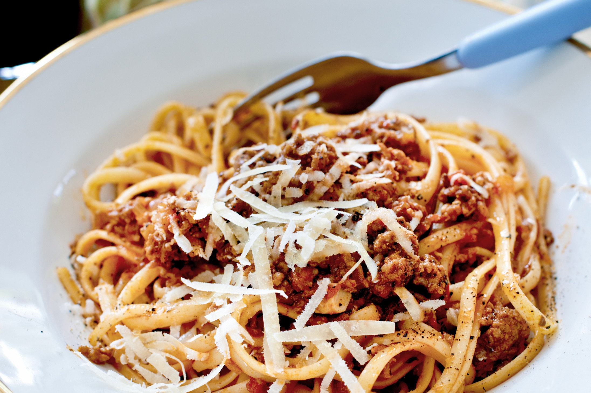

- 800g Kycklingfärs
- 2 Gul lök
- 4 Vitlöksklyftor / 4 krm Vitlökspulver
- 2 Morot
- 0.5 dl Tomatpuré
- 0.5 msk Salt
- 1 msk Svartpeppar
- 800g Krossade tomater
- 2 dl Mjölk
- Valfri pasta
Du behöver:
Spaghetti Bolognese
(8 portioner)
1. Skala och hacka lök, vitlök och morötter
2. Fräs i gryta under 10 min så det får färg
3. Tillsätt oregano
4. Bryn färsen i omgångar med tomatpuré i en stekpanna
5. Tillsätt färsen, salt och peppar i grytan
6. Rör ned krossade tomater och mjölk i grytan
7. Låt stå och sjuda i 1 timme
Källa: Arla